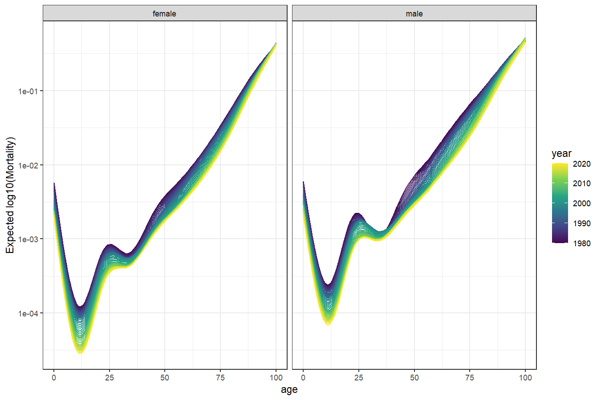

ffc
Functional ForeCasting
The goal of the ffc 📦 is to perform functional regression using Generalized Additive Models (GAMs). The package integrates with the extremely flexible mgcv package to enable functional responses to be modelled and predicted using a broad range of predictor effects. Key among these types of predictors are dynamic functional predictors using a new fts() term, which sets up functional predictors whose coefficients are modelled as time-varying. These time-varying coefficients can then be forecasted ahead using a variety of efficient forecasting algorithms, providing unmatched flexibility to model and predict how functional responses change over time.
Installation
You can install the development version of ffc from GitHub with:
# install.packages("pak")
pak::pak("nicholasjclark/ffc")A brief example
Load the in-built Queensland Mortality data, which contains the number of deaths per age category over time in the state of Queensland, Australia
library(ffc)
library(ggplot2); theme_set(theme_bw())
data('qld_mortality')
head(qld_mortality)
#> year age sex deaths population
#> 1 1980 0 female 190 17699.81
#> 2 1980 1 female 20 17505.27
#> 3 1980 2 female 6 17715.56
#> 4 1980 3 female 6 18080.06
#> 5 1980 4 female 10 18390.10
#> 6 1980 5 female 6 18870.54Visualise the mortality curves over time using the log10 scale
ggplot(data = qld_mortality,
aes(x = age,
y = deaths / population,
group = year,
colour = year)) +
geom_line() +
facet_wrap(~ sex) +
scale_colour_viridis_c() +
labs(y = 'Observed log(Mortality)') +
scale_y_log10()
Fit a model to estimate how the log(mortality) curve changed over time using the deaths as the outcome and using a time-varying function of age as the primary predictor. Using fts(), we model the age-death function using a set of k = 10 thin plate basis functions whose coefficients are allowed to vary over time, where time = 'year'
mod <- ffc_gam(
deaths ~
offset(log(population)) +
sex +
fts(age, k = 10, bs = 'tp',
time_bs = 'cr', time_k = '15'),
time = 'year',
data = qld_mortality,
family = poisson(),
engine = 'bam',
discrete = TRUE
)Inspect the model summary; notice in the Formula slot how the basis functions are modelled as by variables in independent smooths of year
summary(mod)
#>
#> Family: poisson
#> Link function: log
#>
#> Formula:
#> deaths ~ sex + offset(log(population)) + s(year, by = fts_bs_s_age__1,
#> bs = "cr", k = 15, id = 1) + s(year, by = fts_bs_s_age__2,
#> bs = "cr", k = 15, id = 1) + s(year, by = fts_bs_s_age__3,
#> bs = "cr", k = 15, id = 1) + s(year, by = fts_bs_s_age__4,
#> bs = "cr", k = 15, id = 1) + s(year, by = fts_bs_s_age__5,
#> bs = "cr", k = 15, id = 1) + s(year, by = fts_bs_s_age__6,
#> bs = "cr", k = 15, id = 1) + s(year, by = fts_bs_s_age__7,
#> bs = "cr", k = 15, id = 1) + s(year, by = fts_bs_s_age__8,
#> bs = "cr", k = 15, id = 1) + s(year, by = fts_bs_s_age__9,
#> bs = "cr", k = 15, id = 1) + s(year, by = fts_bs_fts_age1_mean,
#> bs = "cr", k = 15, id = 1)
#>
#> Parametric coefficients:
#> Estimate Std. Error z value Pr(>|z|)
#> (Intercept) -5.567370 0.002625 -2121 <2e-16 ***
#> sexmale 0.473754 0.002078 228 <2e-16 ***
#> ---
#> Signif. codes: 0 '***' 0.001 '**' 0.01 '*' 0.05 '.' 0.1 ' ' 1
#>
#> Approximate significance of smooth terms:
#> edf Ref.df Chi.sq p-value
#> s(year):fts_bs_s_age__1 8.453 9.657 36159 <2e-16 ***
#> s(year):fts_bs_s_age__2 6.669 7.826 23363 <2e-16 ***
#> s(year):fts_bs_s_age__3 8.142 9.317 22342 <2e-16 ***
#> s(year):fts_bs_s_age__4 6.735 7.921 22197 <2e-16 ***
#> s(year):fts_bs_s_age__5 7.794 8.942 23817 <2e-16 ***
#> s(year):fts_bs_s_age__6 6.449 7.600 22290 <2e-16 ***
#> s(year):fts_bs_s_age__7 7.569 8.687 20362 <2e-16 ***
#> s(year):fts_bs_s_age__8 6.084 7.006 27395 <2e-16 ***
#> s(year):fts_bs_s_age__9 6.212 6.915 12887 <2e-16 ***
#> s(year):fts_bs_fts_age1_mean 10.758 12.260 10448 <2e-16 ***
#> ---
#> Signif. codes: 0 '***' 0.001 '**' 0.01 '*' 0.05 '.' 0.1 ' ' 1
#>
#> R-sq.(adj) = 0.978 Deviance explained = 97%
#> fREML = 24615 Scale est. = 1 n = 8282View predicted functional curves using a fixed offset (where population = 1) to calculate a standardized rate of mortality
newdat <- qld_mortality
newdat$population <- 1
newdat$preds <- predict(
mod,
newdata = newdat,
type = 'response'
)
ggplot(data = newdat,
aes(x = age,
y = preds,
group = year,
colour = year)) +
geom_line() +
facet_wrap(~ sex) +
scale_colour_viridis_c() +
labs(y = 'Expected log10(Mortality)') +
scale_y_log10()
The time-varying coefficients (and their Standard Errors) can be extracted into a tidy format using fts_coefs(), which will facilitate the use of time series models to enable efficient forecasting of the curve into the future
functional_coefs <- fts_coefs(mod)
functional_coefs
#> # A tibble: 410 × 5
#> .basis .time .estimate .se year
#> <chr> <int> <dbl> <dbl> <int>
#> 1 fts_bs_s_age__1 1980 5.11 0.000126 1980
#> 2 fts_bs_s_age__1 1981 5.08 0.000113 1981
#> 3 fts_bs_s_age__1 1982 5.06 0.000103 1982
#> 4 fts_bs_s_age__1 1983 5.03 0.0000947 1983
#> 5 fts_bs_s_age__1 1984 5.00 0.0000874 1984
#> 6 fts_bs_s_age__1 1985 4.97 0.0000814 1985
#> 7 fts_bs_s_age__1 1986 4.95 0.0000765 1986
#> 8 fts_bs_s_age__1 1987 4.92 0.0000724 1987
#> 9 fts_bs_s_age__1 1988 4.90 0.0000700 1988
#> 10 fts_bs_s_age__1 1989 4.87 0.0000688 1989
#> # ℹ 400 more rowsGetting help
If you encounter a clear bug, please file an issue with a minimal reproducible example on GitHub